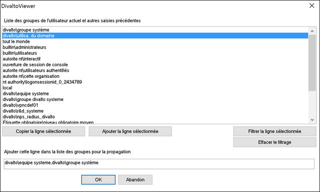

Ce chapitre explique les principes de mise en oeuvre de Divalto en mode ASP.
Architecture
Le concept général est de mutualiser Divalto sur un serveur d'applications (ou une ferme de serveurs) pour des entreprises clientes différentes. Chaque entreprise cliente est indépendante, et n’a aucun accès aux données des autres entreprises hébergées sur le même serveur.
Les utilisateurs se connectent sur un serveur d'applications (ou une ferme de serveurs TSE ou Citrix).
Dans le cas d’une ferme de serveurs d’applications, il faut un serveur de données sur lequel sont stockés les bases de données. Dans des configurations importantes, pour améliorer les temps de réponse, on peut envisager de multiplier également les serveurs de fichiers.
Sur un serveur d’application récent, on peut héberger une vingtaine d’utilisateurs par processeur.
La bande passante nécessaire par client est de l’ordre de 20 Kbits/s pour un poste client. Il s’agit d’un minimum qu’il faudra augmenter en fonction des impressions.
Partage du serveur entre les clients ASP
Chaque client ASP travaille dans des fichiers qui lui sont propres.
Les répertoires sont protégés par des droits d’accès Windows.
Les utilisateurs Divalto sont les utilisateurs de Windows (X_USER = !).
Chaque utilisateur a des chemins implicites qui correspondent aux fichiers de l’entreprise cliente ASP.
Pour chaque client, on aura dans les chemins implicites :
a. Le répertoire propre des fichiers (avec les dictionnaires et les dictionnaires de surcharge).
b. Le répertoire des spécifiques clients (menus, surcharges).
c. Le répertoire vers la version Divalto du client.
Pour chaque client, il y a un fichier des utilisateurs de Divalto distinct.
La clé ServeurXlogf du chapitre System de Divalto.ini permet d’indiquer, pour chaque utilisateur, où se trouve le fichier Xlogf.dhfi :
ServeurXlogf=//nom_de_serveur/…
Xlogf est recherché dans le répertoire indiqué du serveur.
Exemple : ServeurXlogf=//nom_de_serveur/Divalto/SocieteUn
ServeurXlogf=/…
Xlogf est recherché en local, dans le répertoire indiqué.
Exemple : ServeurXlogf=/Divalto/SocieteDeux
Rappel : les fichiers de chemins implicites sont recherchés au même endroit que Xlogf.dhfi.
De manière similaire, la clé CheminLangues du chapitre System de Divalto.ini permet d’indiquer, pour chaque utilisateur, où se trouve le fichier de paramétrage des langues TranslateParams.txt.
Voir la rubrique Création d'un site Harmony Web pour obtenir un fonctionnement identique en mode Web.
Réservations
Cf. paragraphe "Réservation globale ou réservation par base sur un serveur" de la rubrique Déclaration des chemins Harmony.
Fichiers d'aides
Lorsque les fichiers d'aides des applications ne sont pas identiques pour tous les clients ASP, il n'est pas possible de placer tous les fichiers au même endroit. La solution consiste à stocker les fichiers dans un répertoire spécifique à chaque société cliente : voir le livre "Installation des fichiers d'aides", en particulier les rubriques Configuration des serveurs d’aides et d'applications, Centralisation des fichiers d'aides de la version 6 et Installation des aides sur un site multi-environnement.
Gestion de Divalto.ini pour les clients ASP
Certains utilitaires (xDivaltoMajini, xDivaltoPrinters, DivaltoViewer) modifient la section Divalto.ini de la base de registre de l'appelant et lui demandent s'il désire répercuter (*) les modifications pour tous les utilisateurs.
En mode ASP, il est évidemment souhaitable de différencier les utilisateurs, au moins par société. Pour cela, regroupez les utilisateurs d'une même société dans un groupe d'utilisateurs Windows. Si l'appelant fait partie d'un tel groupe, les modifications qu'il apporte seront répercutées uniquement sur les Divalto.ini des utilisateurs appartenant au même groupe. (Mais ATTENTION, si l'appelant ne fait pas partie d'un tel groupe, les modifications seront répercutées comme d'habitude sur tous les Divalto.ini.)
En pratique :
Une première possibilité est de préfixer le nom du groupe par "Divalto_" (par exemple : Divalto_SocieteUn). Dans ce cas, la répercution est automatique pour les utilisateurs de ce groupe.
A partir de la version 2016, une boîte de dialogue permet de saisir une liste de groupes vers lesquels on souhaite propager les modifications.
Au menu "Fichier" ou "Options", sélectionnez le choix "Saisir un nom de groupe à ajouter dans la propagation" :

(*) ATTENTION : cette fonctionnalité est uniquement disponible si vous lancez l'utilitaire par la commande <Exécuter> du menu Démarrer de Windows avec le paramètre /propager. Par exemple :
xDivaltoMajini.exe /propager